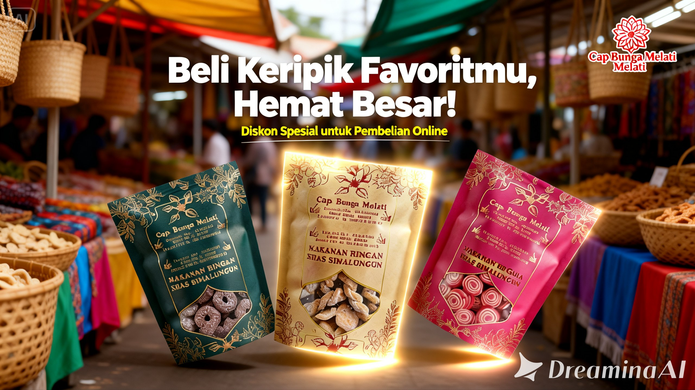

Home > Blog



Jelajahi Artikel Terbaru Kami
Update Terbaru Tentang Camilan dan Kuliner Lokal

Tips Camilan
Panduan Lengkap Memilih Camilan untuk Setiap Acara
Temukan camilan yang tepat untuk arisan, kumpul keluarga, hingga bekal perjalanan. Praktis, enak, dan disukai semua umur.
Baca Selengkapnya
Perawatan
Cara Menyimpan Snack Agar Tetap Renyah Lebih Lama
Pelajari cara penyimpanan yang benar supaya kuping gajah, kue bawang, dan camilan favoritmu tetap awet dan tidak melempem.
Baca Selengkapnya
Budaya
Kisah di Balik Camilan Tradisional Nusantara
Mengulik sejarah dan asal-usul camilan populer seperti untir-untir, kuping gajah, dan lainnya.
Baca Selengkapnya
Oleh-Oleh
Rekomendasi Camilan untuk Oleh-oleh
Butuh ide oleh-oleh? Camilan kering bisa jadi pilihan praktis, tahan lama, dan pastinya disukai siapa saja.
Baca Selengkapnya
Tren 2025
Tren Camilan 2025: Apa yang Lagi Banyak Dicari?
Dari snack pedas hingga camilan premium, cari tahu camilan apa yang sedang digemari tahun ini.
Baca Selengkapnya
Smart Shopping
Tips Memilih Camilan Berkualitas di Toko Online
Panduan mudah membaca ulasan, mengecek foto produk, dan memilih varian camilan terbaik.
Baca Selengkapnya